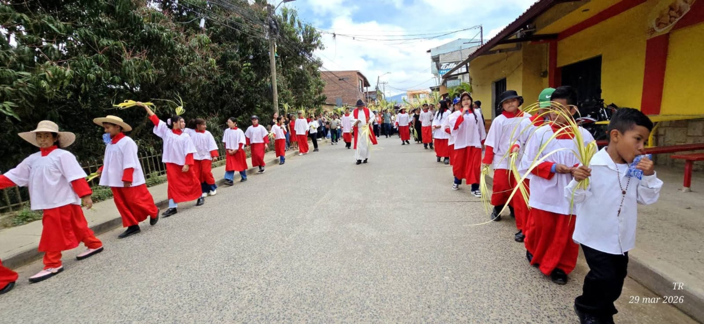
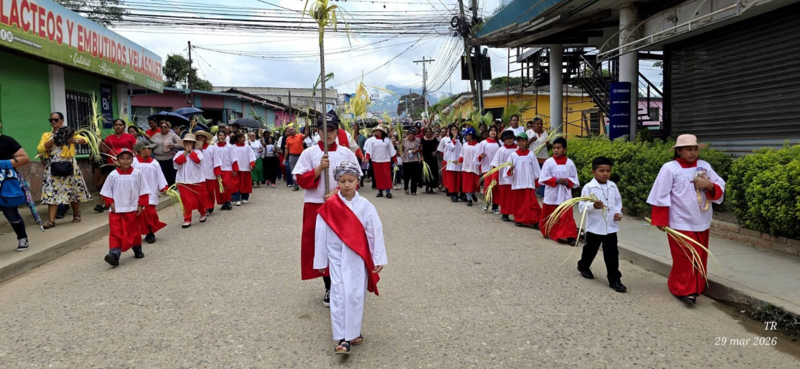
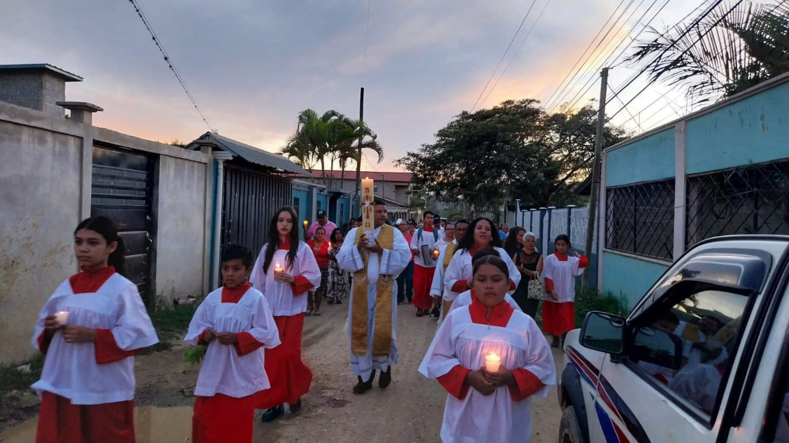

⛪
Vestimenta y materiales
Apoyo para sotanas, roquetes, calzado, libros, accesorios litúrgicos y materiales necesarios para su servicio.
Esta página está dedicada a recibir apoyo para los Acólitos Santa Rosa de Lima. Cada donación puede contribuir a vestimenta, formación espiritual, materiales, actividades litúrgicas y necesidades básicas para que los niños continúen sirviendo con amor en la Iglesia.
Cada aporte ayuda a fortalecer el camino de los niños acólitos, su participación en la liturgia y su crecimiento en valores, disciplina y servicio a Dios.
Apoyo para sotanas, roquetes, calzado, libros, accesorios litúrgicos y materiales necesarios para su servicio.
Recursos para encuentros, catequesis, convivencias, retiros y espacios donde los niños puedan crecer en la fe.
Colaboración para meriendas, transporte, celebraciones especiales y actividades parroquiales de los acólitos.


Nuestra iglesia ayuda a que los niños fortalezcan su Fe.

Optamos porque nuestros miembros se sientan cómodos.

Realizamos actividades en comunidad para fortalecer los valores.
“Cada uno dé según lo que haya decidido en su corazón, no de mala gana ni por obligación, porque Dios ama al que da con alegría.” 2 Corintios 9:7